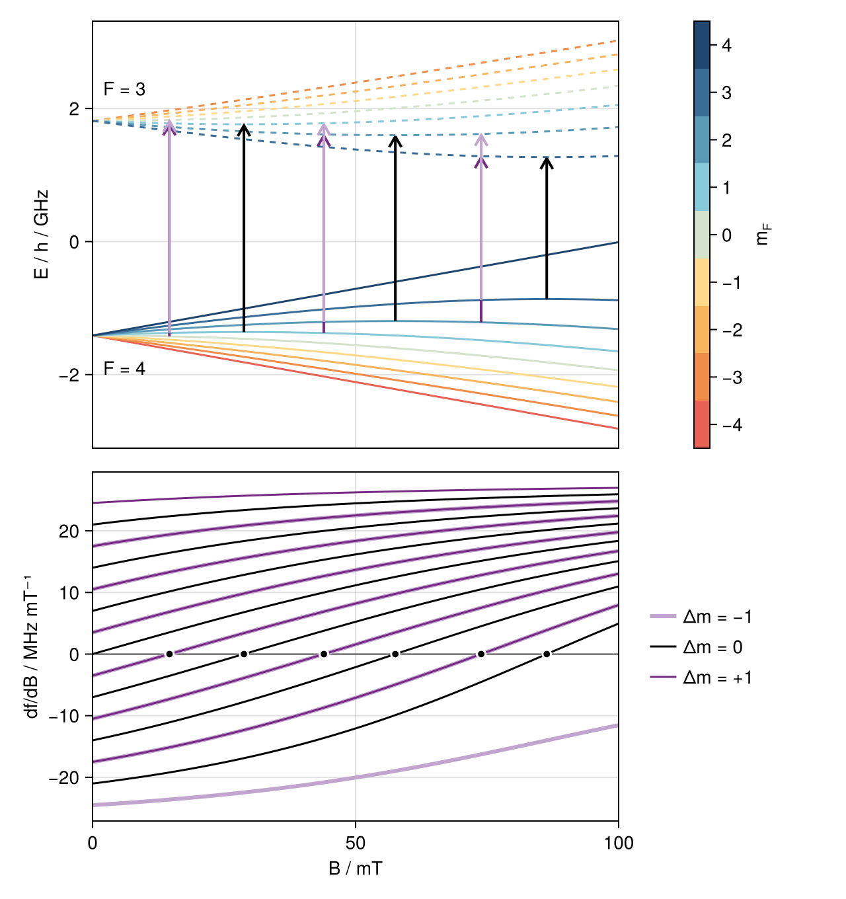
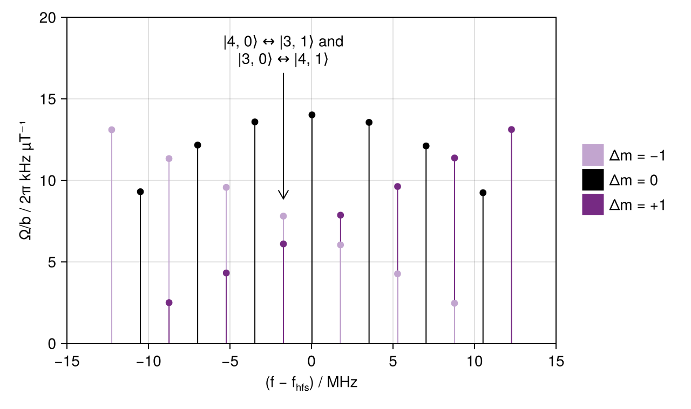

Microwave qubits in the ⁴³Ca⁺ ground state
The ground level S$_{1/2}$ of ⁴³Ca⁺ (nuclear spin $I = 7/2$) splits into two hyperfine levels, $F = 4$ and $F = 3$, separated by 3.2 GHz. The hyperfine constant is negative, so $F = 3$ lies above $F = 4$. Magnetic-dipole (M1) transitions between the two can be driven using microwave fields. As the applied static magnetic field is increased, the Zeeman energy becomes comparable to the hyperfine splitting, and some of these transitions become independent of the field to first order. One of these "clock qubits", at 14.6 mT, was used by Harty et al. (2014) for a long-lived memory with high-fidelity operations.
In this example, we trace the ground-state structure into the intermediate-field regime, locate all field-independent microwave transitions, and compute how strongly a microwave field drives each of them.
Field-independent transitions
An Eigenstructure solves the hyperfine and Zeeman Hamiltonian at one field; offsets returns the eigenenergies relative to the fine-structure centroid, and zeeman_sensitivity the field derivative of the frequency of any transition between the eigenstates, which are labelled by the zero-field $(F, m_F)$ level they connect to adiabatically. The microwave transitions connect $|F = 4, m⟩$ to $|F = 3, m'⟩$ with $|m' - m| ≤ 1$:
using CairoMakie
using Levels
using PrettyTables
using Unitful
ground(B) = Eigenstructure(ca43, "S_1/2"; B)
state(F, m) = StateSpec("S_1/2 F=$F", m)
transitions = state_pairs("S_1/2 F=4" => "S_1/2 F=3"; Δm=-1:1)
# Levels.jl works in angular frequencies; we give derivatives in cyclic ones.
to_cyclic(x) = x / (2π * u"rad")
fields = range(0, 100; length=201) .* u"mT"
structures = ground.(fields)
energies = stack(s -> ustrip.(u"GHz", cyclic.(offsets(s))), structures)
slopes = stack(structures) do s
[ustrip(u"MHz/mT", to_cyclic(zeeman_sensitivity(s, t))) for t in transitions]
endEvery sign change of a sensitivity between two grid points brackets a field-independent point, which insensitive_field refines by root finding on the exact derivative. (We skip the first interval: the $|4, 0⟩ ↔ |3, 0⟩$ transition is field-independent at zero field.)
f_hfs = transition_frequency(ca43, "S_1/2 F=4" => "S_1/2 F=3")
clock_points = [
(; transition=t, B=insensitive_field(ca43, t, (fields[j], fields[j+1]))) for
(i, t) in enumerate(transitions) for
j in 2:(length(fields)-1) if signbit(slopes[i, j]) != signbit(slopes[i, j+1])
]
pretty_table(
HTML,
stack(clock_points; dims=1) do (; transition, B)
lower, upper = transition
Δf = cyclic(transition_frequency(ground(B), transition) - f_hfs)
[lower.m, upper.m, ustrip(u"mT", B), ustrip(u"MHz", Δf)]
end;
column_labels=[
"m (F = 4)",
"m′ (F = 3)",
"B / mT",
HTML("(f − f<sub>hfs</sub>) / MHz"),
],
formatters=[
fmt__printf("%d", 1:2),
fmt__printf("%.4f", [3]),
fmt__printf("%.1f", [4]),
],
)| m (F = 4) | m′ (F = 3) | B / mT | (f − fhfs) / MHz |
|---|---|---|---|
| 0 | 1 | 14.6094 | -25.7 |
| 1 | 0 | 14.6331 | -25.8 |
| 1 | 1 | 28.7783 | -102.4 |
| 1 | 2 | 43.9582 | -239.8 |
| 2 | 1 | 43.9804 | -240.1 |
| 2 | 2 | 57.5565 | -432.1 |
| 2 | 3 | 73.8638 | -729.1 |
| 3 | 2 | 73.8821 | -729.5 |
| 3 | 3 | 86.3348 | -1092.1 |
The first and third rows are the clock qubits at 146.0942 G and 287.7827 G discussed by Harty et al. Below 100 mT, there are nine field-independent transitions in all, and the $Δm = ±1$ ones come in near-coincident pairs: $|4, m⟩ ↔ |3, m + 1⟩$ and $|4, m + 1⟩ ↔ |3, m⟩$ differ in frequency only by the small nuclear Zeeman term, as $g_F$ is very nearly opposite in the two levels.
In the Breit–Rabi diagram of the eigenenergies below, arrows mark these transitions at their field-independent points; underneath, the sensitivities of all microwave transitions are coloured by their $Δm$:
Δm_colours = ["#80cdc1", "#c2a5cf", "black", "#762a83", "#01665e"] # Δm = -2, …, 2
m_colours = cgrad(:Hiroshige, 9; categorical=true)
B = ustrip.(u"mT", fields)
fig = Figure(; size=(640, 680))
ax1 = Axis(fig[1, 1]; ylabel="E / h / GHz")
ax2 = Axis(fig[2, 1]; xlabel="B / mT", ylabel="df/dB / MHz mT⁻¹")
linkxaxes!(ax1, ax2)
hidexdecorations!(ax1; grid=false)
for (i, st) in enumerate(Levels.basis(first(structures)))
linestyle = st.level.f == 4 ? :solid : :dash
lines!(ax1, B, energies[i, :]; color=m_colours[Int(st.m)+5], linestyle)
end
text!(ax1, 2, 2.3; text="F = 3", align=(:left, :center))
text!(ax1, 2, -1.9; text="F = 4", align=(:left, :center))
for (; transition, B) in clock_points
s = ground(B)
y₀, y₁ = ustrip.(u"GHz", cyclic.(state_offset.(Ref(s), Tuple(transition))))
Δm = Int(transition.second.m - transition.first.m)
x = ustrip(u"mT", B)
annotation!(
ax1,
x,
y₀,
x,
y₁;
labelspace=:data,
shrink=(0, 1), # A zero shrink leaves the arrowhead without a direction.
style=Ann.Styles.LineArrow(),
color=Δm_colours[Δm+3],
linewidth=2,
)
end
Colorbar(
fig[1, 2];
colormap=m_colours,
limits=(-4.5, 4.5),
ticks=-4:4,
label=rich("m", subscript("F")),
width=12,
)
hlines!(ax2, 0; color=:black, linewidth=0.75)
# The Δm = ±1 pairs nearly coincide: Δm = +1 is drawn over a broader Δm = −1 line.
Δm_style(Δm) = (; color=Δm_colours[Δm+3], linewidth=Δm == -1 ? 3 : 1.5)
for Δm in -1:1, (i, (lower, upper)) in enumerate(transitions)
upper.m - lower.m == Δm || continue
lines!(ax2, B, slopes[i, :]; Δm_style(Δm)...)
end
scatter!(
ax2,
[ustrip(u"mT", p.B) for p in clock_points],
zeros(length(clock_points));
color=:black,
strokecolor=:white,
strokewidth=1.5,
)
legend = [LineElement(; Δm_style(Δm)...) for Δm in -1:1]
Legend(fig[2, 2], legend, ["Δm = −1", "Δm = 0", "Δm = +1"]; framevisible=false)
xlims!(ax2, 0, 100)
rowsize!(fig.layout, 1, Relative(0.55))
fig
Microwave couplings
A microwave field $\vec b \cos ωt$ couples the eigenstates through the matrix elements of the Zeeman Hamiltonian $\vec b ⋅ \vec M$, and on resonance drives a transition at the Rabi frequency $Ω = |⟨j| \vec b ⋅ \vec M |k⟩|$. zeeman_hamiltonian(s, b) returns this operator in the field eigenbasis of s, for any field vector b. A microwave field along the static one (π) drives the $Δm = 0$ transitions, and a transverse one (σ) those with $Δm = ±1$. At a typical low field of 0.5 mT, this gives the following spectrum:
s = ground(0.5u"mT")
basis = Levels.basis(s)
M_π = zeeman_hamiltonian(s, [0, 0, 1]u"µT")
M_σ = zeeman_hamiltonian(s, [1, 0, 0]u"µT")
rabi(M, (lower, upper)) =
to_cyclic(abs(M[stateindex(basis, upper), stateindex(basis, lower)]))
spectrum = map(transitions) do (lower, upper)
Δm = Int(upper.m - lower.m)
Ω = rabi(Δm == 0 ? M_π : M_σ, lower => upper)
Δf = cyclic(transition_frequency(s, lower => upper) - f_hfs)
(; transition=lower => upper, Δm, Δf=ustrip(u"MHz", Δf), Ω=ustrip(u"kHz", Ω))
endThe near-degeneracy of the $Δm = ±1$ pairs matters at low field as well. To move population from $|4, 0⟩$ to $|3, 1⟩$, for instance, a σ pulse also drives the spectator transition $|3, 0⟩ ↔ |4, 1⟩$ if $|3, 0⟩$ is occupied. At 0.5 mT, the two are only a few kilohertz apart, and the spectator is the more strongly coupled:
intended, spectator = state(4, 0) => state(3, 1), state(4, 1) => state(3, 0)
gap = transition_frequency(s, intended) - transition_frequency(s, spectator)
round(u"kHz", cyclic(gap); digits=2),
round(rabi(M_σ, spectator) / rabi(M_σ, intended); digits=4)(2.86 kHz, 1.2798)In the spectrum, the $Δm = ±1$ lines of each pair are drawn slightly apart:
# Plot
fig = Figure(; size=(640, 380))
ax = Axis(
fig[1, 1];
xlabel=rich("(f − f", subscript("hfs"), ") / MHz"),
ylabel="Ω/b / 2π kHz µT⁻¹",
)
# Shorter stems are drawn last, so that both lines of each Δm = ±1 pair show.
stems = sort(spectrum; by=l -> l.Ω, rev=true)
colours = [Δm_colours[l.Δm+3] for l in stems]
stem!(
ax,
[(l.Δf, l.Ω) for l in stems];
color=colours,
stemcolor=colours,
stemwidth=1,
trunkcolor=:black,
trunkwidth=0.75,
)
(; Δf, Ω) = only(filter(l -> l.transition == spectator, spectrum))
annotation!(
ax,
Δf,
18,
Δf,
Ω + 0.6;
text="|4, 0⟩ ↔ |3, 1⟩ and\n|3, 0⟩ ↔ |4, 1⟩",
labelspace=:data,
style=Ann.Styles.LineArrow(),
)
legend = [PolyElement(; color=Δm_colours[Δm+3]) for Δm in -1:1]
Legend(fig[1, 2], legend, ["Δm = −1", "Δm = 0", "Δm = +1"]; framevisible=false)
limits!(ax, -15, 15, 0, 20)
fig
This page was generated using Literate.jl.